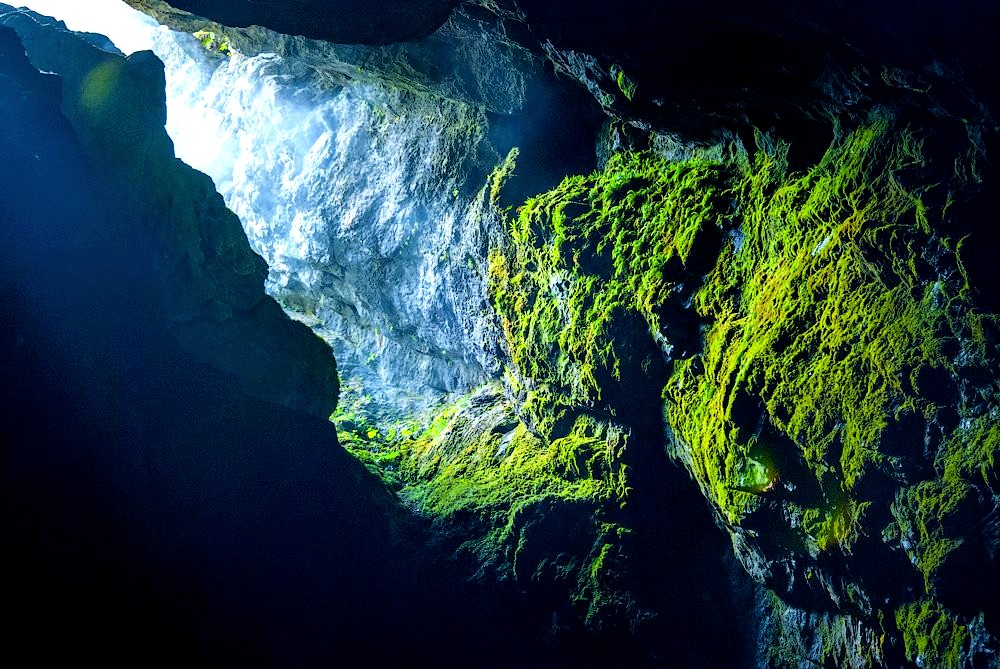
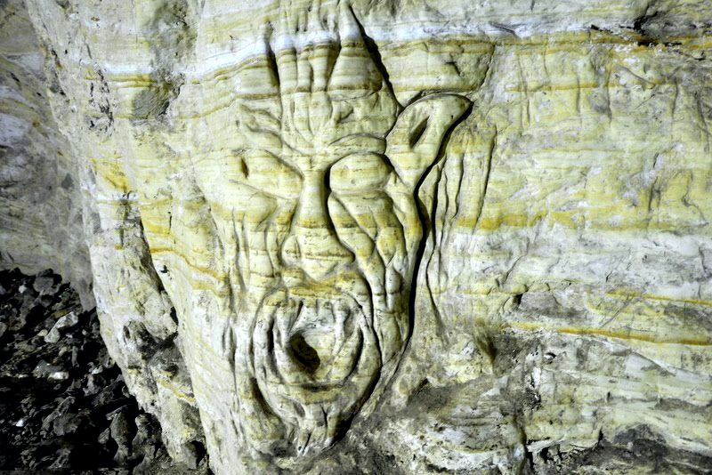
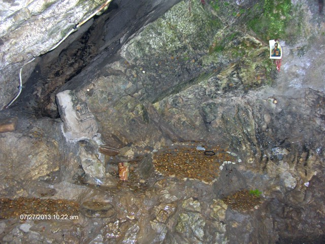

Сгушена в полите на Западните Родопи, на около 1150 м надморска височина, в близост до Ягодинската пещера и едва на 1,5 км от Триград, се намира една от най-загадъчните пещери на Балканите – „Дяволско гърло“. Определяме я като такава, тъй като за разлика от другите пещери, тя не впечатлява своите посетители с великолепните си образувания, а с историята и мистериозните събития, които се крият зад нейните стени и от хилядолетия подхранват човешкото въображение.
„Дяволско гърло“ се образува вследствие на пропадане на земните пластове. Причината, поради която в нея липсват образувания като сталактити, сталагмити или сталактони е, че пещерата е на възраст около 175 000 години, което я прави сравнително млада.
Първото проникване в нея е извършено през 1961 г. от алпинистите Николай Корчев и Елена Подарева, които са последвани от много други авантюристи.
Естественият ѝ вход (сега изход, състоящ се от 301 стъпала, равняващи се на 22-етажна сграда) е заменен с изкуствено прокопан сто и петдесет метров тунел. Именно по него преминава туристическата пътека, по чието протежение могат да се видят три релефа – дяволска глава, изсечена близо до входа за посетители; фигура на мъж в цял ръст, в античен стил; малко изворче с лечебна вода, където се намира лика на Богородица. Преданието гласи, че намисляйки си желание тук, то ще се сбъдне. Последните два можете да откриете именно в основната и най-интересната част на „Дяволското гърло“ – Бучащата зала.
Прословутата зала е образувана в следствие на пропадането на Триградската река в пещерата. Резултат от това е и каскадата от 18 водопада – най-големият, от които (42 м) е обявен за най-високият подземен водопад на Балканите. Ширината на тази част от пещерата е 40 м, дължината ѝ е 11 метра, а височината – 35 м.
Легенда за пещерата:
Според най-известната легенда това е входът, пред който митичният тракийски цар и легендарен певец Орфей слиза в подземното царство на Хадес, за да спаси любимата си Евридика. Трогнат от нежния шепот на арфата на Орфей и от безмерната любов на царя - певец, Хадес най-накрая се съгласил да върне жена му в света на живите. Условието било, изкачвайки се към горния свят, Орфей да не обръща глава назад. Малко преди изхода обаче, Орфей не издържал и погледнал назад, за да се увери, че Евридика наистина го следва… Тогава тя потънала завинаги обратно в подземното царство. След повторната загуба на любимата си Орфей бил съкрушен. Започнал безутешно да плаче и от сълзите му бликнал извор, който и до днес може да бъде видян в пещерата и който екскурзоводите показват на туристите.
“Много красиво! Вижда се реката как минава през пещерата. Може да се влезе през едно, а да се излезе през друго място, като изходът е по едни доста стръмни и страшни стълби.” – споделят хора посетили забележителността
  